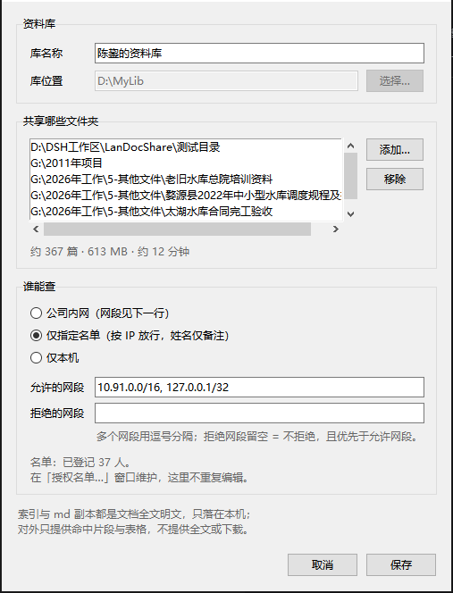

LanDocShare 使用说明
把自己的资料库共享给同事：同事打开一个网址就能搜到你授权范围内的文档片段与表格，全文不出这台电脑。
1这是什么
LanDocShare 是装在资料主人电脑上的一个小程序。它做三件事：
- 把文档转成可检索的文字。Word / PowerPoint / PDF（含加密文档、扫描件）转成 Markdown，写进本机的全文索引。
- 起一个只读检索服务。同网段的同事打开
http://你的IP:端口/就能搜，返回命中片段和表格，不提供全文、不提供下载。 - 管权限。按 IP 放行（网段 / 名单 / 仅本机），黑名单可精确挡人。
你是库主人
装程序 → 建库向导选文件夹 → 保持托盘程序在运行。你的文档只在这台机器上。
你是同事
打开 http://10.91.1.197:8767/ 找库，或直接用库主人给你的地址搜。不需要装任何东西。
2三步上手
- 拿到程序从登记中心首页下载
LanDocShare.zip，解压到任意目录（别放 C 盘根目录、别放共享盘上）。 - 双击
LanDocShare.exe第一次会弹建库向导：填库名、选要共享的文件夹、选谁能查，点「建库」。之后它会缩到托盘，空闲时自动转换文档。 - 把地址发出去状态窗口里有「服务地址」，点「复制地址」发给同事；或者在状态窗口点「打开检索页」自己先搜一下。
建库不是瞬间完成的：程序只在你离开电脑时（5 分钟无键鼠、或锁屏）才转换，免得跟 Office 抢窗口。想马上转，点托盘菜单「立即重建索引」或状态窗口的「立即更新」，它会一直转到没有新文档为止。
3装在哪、怎么启动
环境要求
| 项目 | 说明 |
|---|---|
| 系统 | Windows 10 / 11，64 位 |
| Office | 装了 Office 或 WPS 才能转 .doc/.docx/.ppt/.pptx；没有也能用，只是这几类记失败 |
| Acrobat | 可选。有 Acrobat 时加密 PDF 读得更快更稳；没有则走随包的兜底工具 |
| 磁盘 | 库目录 ≈ 原文档 1~2 倍（存 Markdown 副本 + 索引） |
| 网络 | 和同事在同一网段（默认 10.91.0.0/16） |
第一次启动
- 双击
LanDocShare.exe：首次弹向导；以后每次启动直接起服务并缩到托盘（托盘图标是一个纸页）。 - 重复双击不会起第二个服务，只会把已经在跑的那个状态窗口叫出来。
- 不想每次手动开：托盘菜单勾「开机自启」（写注册表
HKCU\...\Run，不需要管理员）。
库服务默认从 8766 起，被占用就顺延（8767 留给登记中心，所以常落在 8768）。实际端口以状态窗口「服务地址」为准，别照着文档硬填。
建议的摆放方式
- 程序解压到固定目录（如
D:\Apps\LanDocShare），升级时整目录替换。 - 库目录放在本机硬盘上：不要放在网络盘、OneDrive 同步目录或移动硬盘里（盘一拔，文档会被标成「源文件已不在」）。
4建库向导
首次运行自动弹出；建好之后从托盘菜单「修改建库设置…」重开，字段会预填当前值。

资料库
- 库名称：同事看到的库名，比如「陈鋆的资料库」。写清楚是谁的，同事才知道该找谁。
- 库位置：索引、Markdown 副本、日志放哪。默认在「我的文档」下，可以改。改建库设置时这一项是锁定的——搬库不做。
共享哪些文件夹
- 点「添加…」选目录，可加多个；选中后点「移除」去掉。
- 下面会当场估算「约 N 篇 · 多大 · 要多久」（只统计文件、不打开内容），据此决定要不要一次全加。
- 加了就共享：这个目录里的文档会对「谁能查」里允许的人可见，加之前想清楚。
- 子目录自动包含；
.xls/.xlsx/.et暂不支持，~$临时文件、隐藏目录自动跳过。
谁能查
| 选项 | 效果 |
|---|---|
| 公司内网 | 「允许的网段」里的机器都能查，不认人。默认 10.91.0.0/16，可改成更小的网段（如只给本科室 10.91.1.0/24）。 |
| 仅指定名单 | 只有名单里登记过 IP 的人能查。按 IP 放行，姓名只用于日志——知道姓名进不来。名单在「授权名单…」窗口维护。 |
| 仅本机 | 只有这台电脑能查，同事打不开。临时不想共享时用这个。 |
允许的网段：多个用逗号分隔，如 10.91.1.0/24, 10.91.2.0/24。
拒绝的网段：留空 = 不拒绝；填了就是黑名单，优先于允许网段和名单。别把自己（127.0.0.1）写进去，写了本机也打不开。
「仅指定名单」需要先有人，首次建库时名单是空的，所以先建库、再去「授权名单…」加人，回来改成名单模式，改动当场生效、不用重启。
5状态窗口
启动即弹出；关掉只是隐藏，双击托盘图标再打开。每行都有用：
| 行 | 看什么 |
|---|---|
| 状态 | 「建库中：已转换 300 篇 · 还剩 700 篇（约 1 小时）」或「已暂停」「运行中」 |
| 文档 | 能搜到的篇数；有失败时显示「N 篇 · M 篇转换失败」 |
| 待收录 | 只在新文档还没转完时出现 |
| 共享范围 | 网段 / 名单几人 / 仅本机；用了黑名单会显示「· 拒绝 N 段」 |
| 扫描件 OCR | 走的是「Windows 系统 OCR」还是「Tesseract 兜底」；两条都没有时这行不显示 |
| 服务地址 | 发给同事的网址，例如 http://10.91.1.197:8768/ |
| 上次扫描 | 最近一次检查新文档的时间 |
| 版本 | 本机版本；有新版本时显示「v0.2.20 → v0.2.21（已下载）」 |
按钮
- 打开检索页：用浏览器打开自己的库，先自己搜一遍最直观。
- 立即更新：跳过「空闲才转」的限制，马上开始收录，直到没有新文档。
- 暂停共享 / 恢复共享：暂停后任何人都连不上（本机仍可用命令行检索）。
- 授权名单：打开名单窗口（见第 8 节）。
- 复制地址：把服务地址复制到剪贴板。
- 清理…：源文件已不在的文档攒到 N 篇时才亮，点一下问一次才删（见第 9 节）。
- 检查更新 / 下载更新 / 升级到 v…：见第 13 节。
6托盘菜单
| 菜单项 | 用途 |
|---|---|
| 显示状态窗口 | 把状态窗口叫出来（每次都回到屏幕正中） |
| 打开库主页 | 浏览器打开检索页 |
| 可访问的资料库… | 列出登记中心里对你开放的库，双击直接打开 |
| 检查更新 | 手动查新版本；平时每 6 小时自动查一次 |
| 立即重建索引 | 建库期间变成「停止建库」 |
| 修改建库设置… | 改库名、共享目录、谁能查（当场生效） |
| 授权名单… | 增删人员、导入导出、与中心同步 |
| 暂停共享 | 勾选后外部一律 403 |
| 打开库目录 | 资源管理器打开库位置（看 md、日志） |
| 开机自启 | 写/删注册表 Run 项 |
| 查看日志 | 打开 logs\app.log |
| 退出 | 真正退出（关状态窗口只是隐藏） |
新图标会被收进任务栏 ^ 溢出区。点开 ^，把纸页图标拖到任务栏上就常驻了。
7修改建库设置
托盘菜单 →「修改建库设置…」。与首次建库是同一个窗口，但：
- 库名、共享目录、网段都会预填当前值，改完点「保存」当场生效：服务端每个请求现读共享范围，调度线程每轮现读目录，不用重启。
- 库位置锁定：搬库要重转，不在这个窗口做。
- 存储策略不动：
store_content、snippet_only_chars这些只能改config.json，重开向导不会把它们冲掉。 - 撤掉某个共享目录：该目录下的文档标记为「已撤回」——你自己还能搜到，同事看不到；把目录加回来就自动恢复。不会删掉库里的副本。
8授权名单
托盘菜单 →「授权名单…」。名单是「姓名 = 备注，IP = 真正凭证」：
- 一条记录必须有 IP；空 IP 的条目不授权，填了姓名也进不来。
- IP 会校验是否落在允许网段内，不在会提示「这个人会连不上」。
- 支持从 CSV 导入（两列
姓名,IP，可带表头）、导出给同事、按部门分组。 - 名单只存本机
config.json；登记中心会同步一份用于「谁能看到这个库」，只含姓名/IP，不含文档内容。 - 改名单即时生效，不用重启。
名字只在审计日志里出现。同事的浏览器不填姓名也能查（只要 IP 在名单里）；填错姓名反而可能匹配不上。
9清理与瘦身
库的设计是只增不减：源文件被删、被改名、移动硬盘没插，库里的副本都留着——防止「盘一拔，整库清空」。代价是：
- 文件删了，内容还能被搜到。这是隐私问题，所以要有一个由人点头的删除出口。
- 出口就是状态窗口的「清理…」按钮（攒到 N 篇源文件缺失时亮起），或者命令行
prune --gone。它删掉这些文档的 Markdown 副本、索引行，以及失败记录。 - 「已撤回」（目录从共享列表里移掉）的文档不在清理范围，避免误删。
LanDocShare.exe prune --lib-dir D:\MyLib # 只报告，不删
LanDocShare.exe prune --lib-dir D:\MyLib --gone # 真删删了要恢复，只能把源文件放回来重新收录（会重转一遍）。所以：移动硬盘暂时没插、网盘暂时掉线时，别点清理。
10同事怎么查（网页）
- 打开库主人给你的地址，例如
http://10.91.1.197:8768/；或在登记中心http://10.91.1.197:8767/首页看「对你开放的库」，点进去。 - 搜索框输入关键词，回车。左边是目录树，可以点进某个文件夹只看它。
- 结果给的是命中片段（关键词前后几行）和表格；没有全文下载，这是设计如此。
- 两个字的词（「洪水」「乐平」）也能搜——走的是另一条索引路径，结果一样。
搜不到时
- 确认文档已经收录（库主人那边状态窗口的篇数、或「上次扫描」时间）。
- 确认自己的 IP 在允许范围（网段或名单）。
- 文档可能是扫描件：文字是 OCR 出来的，个别字会错，换个说法再搜。
- 被撤回的目录，只有库主人自己搜得到。
11在 AI 助手里查
仓库里带了客户端 skill skill/lan-lib-search/：把整个目录拷到你的 AI 助手 skills 目录，之后说「查一下院里马斯京根的资料」它就会自动调。
- 触发：查/搜/找院里的资料、报告、方案、规程、批复。
- 原理：先问登记中心「对我开放的库有哪些」，再并发去各库检索，合并结果按库分组。
- 没装 Python 也能用：skill 里带
curl降级路径。 - 返回片段和表格，不返回全文。
12扫描件 OCR
没有文字层的 PDF（扫描件）不再直接跳过：
- 先用 Windows 自带 OCR（中文语言包，不增加体积）；
- 识别不出来或字数太少，退回随包的 Tesseract（约 14.7 MB，含中英模型）。
| 参数 | 默认 |
|---|---|
| 开关 | ocr_scanned_pdfs: true（关掉就完全不渲染） |
| 分辨率 | 300 dpi |
| 最多识别 | 前 60 页 |
| 速度参考 | 2 页意见函约 2 秒 / 1600 字；38 篇 175 页约 7 分钟 |
打印体公文基本可读，但会出现错字（「赣」认成「考」这类），手写、表格线密的效果一般。每篇开头有一行提示「（扫描件：以下文字由 OCR 识别，可能有错字）」，引用前请核对。
13版本与更新
- 自动查：每 6 小时查一次；托盘「检查更新」可手动查。
- 下载：发现新版后菜单变成「下载新版本 v0.2.21」；下完变「升级到 v0.2.21」。
- 升级：点一下就替换并重启，失败了会自动回滚到旧版本。
- 同事侧不用管：检索页随程序一起发；同事自己那台机器的库软件也是各自升级。
- 版本号在状态窗口和
latest.json里，升级前可以对照。
14常见问题
双击没反应 / 图标不出来
- 可能已经在跑了：再双击一次会把状态窗口叫出来（单实例）。
- Win11 看任务栏
^溢出区。 - 看
%LOCALAPPDATA%\LanDocShare\logs\tray.log。
同事打开是「IP 不在授权名单里」
- 他的 IP 不在允许网段，也不在名单里 → 库主人加 IP 或加网段（「修改建库设置…」或「授权名单…」）。
- 被黑名单挡了 → 看「拒绝的网段」有没有写到他。
- 注意：库里不认姓名，填名字没用。
「M 篇转换失败」
<库目录>\failures.json 里有每篇的原因：
| 原因 | 含义与处理 |
|---|---|
no_office | 没装 Office/WPS，装好后自动重试 |
no_reader | PDF 既没有文字层也没有可用读取器 |
no_ocr | 扫描件但没有 OCR 引擎，装好语言包/换新版后自动重试 |
no_text_layer | 扫描件且 OCR 也没认出字（可能是纯图片、空白页） |
timeout | 单篇超时（大文件/Office 卡住），改好文件或删掉记录会重试 |
password_protected | 有打开密码，本程序不解口令 |
同一文件版本连续失败一次就不再自动重试；装好环境（Office/Acrobat/OCR）后会自动放回队列。要立刻重试某篇：删掉它在 failures.json 里的条目，或让文件 mtime 变一下。
建库很慢 / 一直停在「还剩」
- 它是「空闲才转」：你在用电脑时不动。点「立即更新」强制。
- 加密文档要起 Office/Acrobat，每篇几秒是正常的。
- 扫描件走 OCR，一页约 2 秒。
删了文件，为什么还能搜到
库只增不减（见第 9 节）。确认不再需要，点「清理…」或跑 prune --gone。
换了电脑/网卡，同事连不上
- 服务地址里的 IP 变了（状态窗口「复制地址」拿新的）。
- 本机地址有 60 秒缓存，换网络后最多等一分钟，或重启程序。
保存设置时为什么闪黑框
0.2.17 起已修：程序调用 tasklist/taskkill 时隐藏窗口。如果还看到，说明你在用旧版本。
15命令行速查
给愿意动手的人。全部命令都可以在程序目录下执行（打包版用 LanDocShare.exe，源码运行用 python -m landoc.cli）。
# 建库（可重复 --folder；--allow-cidrs 支持逗号分隔）
LanDocShare.exe init --lib-dir D:\MyLib --name 陈鋆的资料库 ^
--folder D:\资料 --allow-cidrs 10.91.1.0/24
# 体检：抽样看明/密比例、本机有没有 Office / Acrobat
LanDocShare.exe probe --lib-dir D:\MyLib
# 转换（增量：再跑只处理有变化的文件）
LanDocShare.exe convert --lib-dir D:\MyLib
# 起服务（默认 8766，被占用顺延）
LanDocShare.exe serve --lib-dir D:\MyLib
# 统计 / 状态
LanDocShare.exe status --lib-dir D:\MyLib
# 名单维护（CSV 两列：姓名,IP；每行必须有 IP）
LanDocShare.exe people --lib-dir D:\MyLib --csv 名单.csv
LanDocShare.exe people --lib-dir D:\MyLib --export 名单.csv
# 清理源文件已不在的文档
LanDocShare.exe prune --lib-dir D:\MyLib [--gone]登记中心（一台常开机器）
# 前台起中心
LanDocShare.exe registry --port 8767
# 开机自启（带看门狗：中心退出自动拉起，卡死自动重启）
LanDocShare.exe registry --install-autostart --port 8767 --package-zip D:\分发\LanDocShare.zip
# 优雅停（重打包前用，避免文件被占用）
LanDocShare.exe registry --stop让库去登记
LanDocShare.exe init --lib-dir D:\MyLib --registry-url http://10.91.1.197:8767之后每次启动、每 60 秒自动心跳，不用再管。
16配置、日志与端口
库目录里有什么
D:\MyLib\
config.json 库的配置（名字、共享目录、网段、名单、OCR 开关…）
library.db FTS5 全文索引（SQLite）
state.json 扫描进度、每篇的状态与失败记录
failures.json 转换失败清单（排障先看这个）
md\ 文档的 Markdown 副本（明文，只在本机）
logs\
app.log 运行日志（1 MB 轮转，留一份 .1）
access_log.jsonl 谁查了什么（4 MB 轮转）
update.log 自动更新日志配置项速查（config.json）
| 键 | 含义 |
|---|---|
allow_cidrs | 允许的网段；空数组 = 暂停共享（不是全网放行） |
deny_cidrs | 拒绝的网段，优先于允许 |
allow_people | 姓名 → IP 的名单 |
snippet_tokens | 每条命中片段的大致长度（默认 48） |
snippet_only_chars | 只索引前 N 字（默认 20000；调小更防外泄，但搜不到后半篇） |
store_content | 是否把正文写进索引（关掉后表格改从 md 抽） |
render_md | 是否落 Markdown 副本 |
ocr_scanned_pdfs | 扫描件是否 OCR（默认 true） |
ocr_dpi / ocr_max_pages | OCR 分辨率与前多少页（默认 300 / 60） |
registry_url | 登记中心地址；空 = 不登记 |
port | 固定端口（0 或不填 = 自动挑） |
端口
| 端口 | 用途 |
|---|---|
| 8766 起 | 库的检索服务（被占用顺延；8767 留给中心） |
| 8767 | 登记中心：清单、分发、更新 |
17安全边界
- 全文不出本机：对外只有命中片段和表格；
/download之类的全文接口不存在（只有库主人本机可读 md）。 - 索引与 md 是明文：都落在本机库目录，磁盘被拷走就等于内容泄露——所以库目录别放共享盘/网盘。
- 按 IP 认人：姓名只是备注，不是凭证；IP 可能被冒用，敏感库用「仅指定名单」并配合中心。
- 审计：每次检索记
access_log.jsonl（来源 IP、查询词、条数）。 - 暂停共享：清空允许网段，所有来源 403，本机仍可用。
- 撤回 ≠ 删除：撤掉目录后同事看不到，但内容还在库里；要彻底删只能清理（删副本）或直接删库。